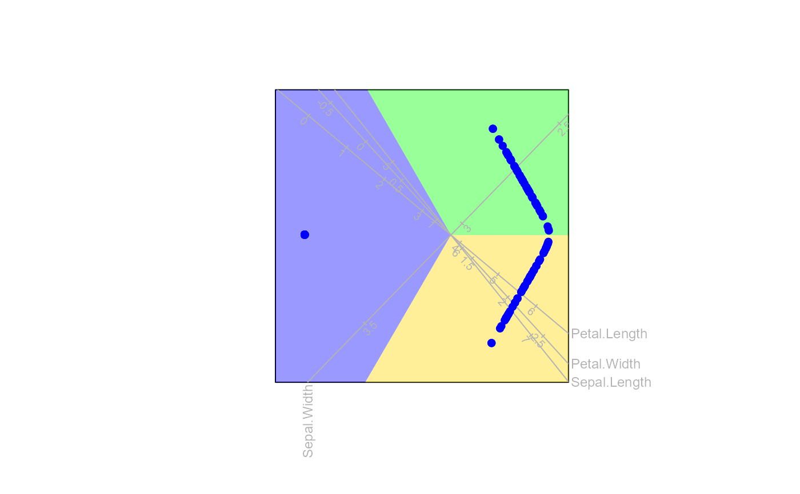

Classification biplot method
classification.RdThis function produces a list of elements to be used for constructing a classification biplot.
Arguments
- bp
an object of class
biplotobtained from preceding functionbiplot().- Pmat
a matrix containing the posterior probability for the classes
- dim.biplot
dimension of the biplot. Only values 1, 2 and 3 are accepted, with default
2.- e.vects
which eigenvectors (principal components) to extract, with default
1:dim.biplot.- group.aes
vector of the same length as the number of rows in the data matrix for differentiated aesthetics for samples.
- axes
type of axes, defaults to "regression"
- col
colour of the classification regions
- opacity
opacity of classification regions
- borders
logical, indicating whether borders should be added to classification regions
References
Gardner-Lubbe, S., 2016. A triplot for multiclass classification visualisation. Computational Statistics & Data Analysis, 94, pp.20-32.
Examples
biplot(iris[,1:4]) |>
classification(predict(MASS::lda(Species ~ ., data = iris))$posterior)
#> Object of class biplot, based on 150 samples and 4 variables.
#> 4 numeric variables.
# create a classification biplot
biplot(iris[,1:4]) |>
classification(predict(MASS::lda(Species ~ ., data = iris))$posterior) |>
plot()
